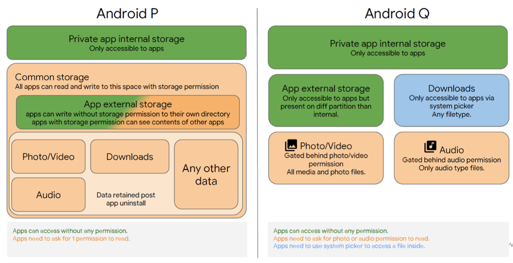

<!DOCTYPE html>


  


<html class="theme-next pisces use-motion" lang="zh-Hans">
<head>
  <!-- hexo-inject:begin --><!-- hexo-inject:end --><meta charset="UTF-8"/>
<meta http-equiv="X-UA-Compatible" content="IE=edge" />
<meta name="viewport" content="width=device-width, initial-scale=1, maximum-scale=1"/>
<meta name="theme-color" content="#222">


<meta http-equiv="Cache-Control" content="no-transform" />
<meta http-equiv="Cache-Control" content="no-siteapp" />


  
  
  <link href="/lib/fancybox/source/jquery.fancybox.css?v=2.1.5" rel="stylesheet" type="text/css" />


  
  
  
  

  
    
    
  

  

  

  

  

  
    
    
    <link href="//fonts.googleapis.com/css?family=Lato:300,300italic,400,400italic,700,700italic&subset=latin,latin-ext" rel="stylesheet" type="text/css">
  


<link href="/lib/font-awesome/css/font-awesome.min.css?v=4.6.2" rel="stylesheet" type="text/css" />

<link href="/css/main.css?v=5.1.2" rel="stylesheet" type="text/css" />


  <meta name="keywords" content="android," />


  <link rel="shortcut icon" type="image/x-icon" href="/images/avatar.png?v=5.1.2" />


<meta name="description" content="Android预计在今年Q3发布androidQ的最终版本, 8月份Android发布了Beta6版本, 距离Final Release也不远了, 针对Q的适配已经迫在眉睫! 针对Q的隐私权和行为变更, 我们主要焦点还是着重于, 针对于所有应用(不论targetSdkVersion是否为Q的应用)都有影响的变更上来看">
<meta name="keywords" content="android">
<meta property="og:type" content="article">
<meta property="og:title" content="AndroidQ适配手册">
<meta property="og:url" content="//litten.me/2019/09/04/AndroidQ适配手册/index.html">
<meta property="og:site_name" content="天晴日无风">
<meta property="og:description" content="Android预计在今年Q3发布androidQ的最终版本, 8月份Android发布了Beta6版本, 距离Final Release也不远了, 针对Q的适配已经迫在眉睫! 针对Q的隐私权和行为变更, 我们主要焦点还是着重于, 针对于所有应用(不论targetSdkVersion是否为Q的应用)都有影响的变更上来看">
<meta property="og:locale" content="zh-Hans">
<meta property="og:image" content="//litten.me/2019/09/04/AndroidQ适配手册/storage.png">
<meta property="og:updated_time" content="2019-09-04T07:36:46.777Z">
<meta name="twitter:card" content="summary">
<meta name="twitter:title" content="AndroidQ适配手册">
<meta name="twitter:description" content="Android预计在今年Q3发布androidQ的最终版本, 8月份Android发布了Beta6版本, 距离Final Release也不远了, 针对Q的适配已经迫在眉睫! 针对Q的隐私权和行为变更, 我们主要焦点还是着重于, 针对于所有应用(不论targetSdkVersion是否为Q的应用)都有影响的变更上来看">
<meta name="twitter:image" content="//litten.me/2019/09/04/AndroidQ适配手册/storage.png">


<script type="text/javascript" id="hexo.configurations">
  var NexT = window.NexT || {};
  var CONFIG = {
    root: '/',
    scheme: 'Pisces',
    sidebar: {"position":"left","display":"post","offset":12,"offset_float":12,"b2t":false,"scrollpercent":false,"onmobile":false},
    fancybox: true,
    tabs: true,
    motion: true,
    duoshuo: {
      userId: '0',
      author: '博主'
    },
    algolia: {
      applicationID: '',
      apiKey: '',
      indexName: '',
      hits: {"per_page":10},
      labels: {"input_placeholder":"Search for Posts","hits_empty":"We didn't find any results for the search: ${query}","hits_stats":"${hits} results found in ${time} ms"}
    }
  };
</script>


  <link rel="canonical" href="//litten.me/2019/09/04/AndroidQ适配手册/"/>


  <title>AndroidQ适配手册 | 天晴日无风</title>
  


  <script type="text/javascript">
    (function() {
      var hm = document.createElement("script");
      hm.src = "//tajs.qq.com/stats?sId=64926000";
      var s = document.getElementsByTagName("script")[0];
      s.parentNode.insertBefore(hm, s);
    })();
  </script><!-- hexo-inject:begin --><!-- hexo-inject:end -->


</head>

<body itemscope itemtype="http://schema.org/WebPage" lang="zh-Hans">

  
  
    
  

  <!-- hexo-inject:begin --><!-- hexo-inject:end --><div class="container sidebar-position-left page-post-detail ">
    <div class="headband"></div>

    <header id="header" class="header" itemscope itemtype="http://schema.org/WPHeader">
      <div class="header-inner"><div class="site-brand-wrapper">
  <div class="site-meta ">
    

    <div class="custom-logo-site-title">
      <a href="/"  class="brand" rel="start">
        <span class="logo-line-before"><i></i></span>
        <span class="site-title">天晴日无风</span>
        <span class="logo-line-after"><i></i></span>
      </a>
    </div>
      
        <p class="site-subtitle">燃烧了一颗恒星来相见</p>
      
  </div>

  <div class="site-nav-toggle">
    <button>
      <span class="btn-bar"></span>
      <span class="btn-bar"></span>
      <span class="btn-bar"></span>
    </button>
  </div>
</div>

<nav class="site-nav">
  

  
    <ul id="menu" class="menu">
      
        
        <li class="menu-item menu-item-home">
          <a href="/" rel="section">
            
              <i class="menu-item-icon fa fa-fw fa-home"></i> <br />
            
            首页
          </a>
        </li>
      
        
        <li class="menu-item menu-item-categories">
          <a href="/categories/" rel="section">
            
              <i class="menu-item-icon fa fa-fw fa-th"></i> <br />
            
            分类
          </a>
        </li>
      
        
        <li class="menu-item menu-item-about">
          <a href="/about/" rel="section">
            
              <i class="menu-item-icon fa fa-fw fa-user"></i> <br />
            
            关于
          </a>
        </li>
      
        
        <li class="menu-item menu-item-archives">
          <a href="/archives/" rel="section">
            
              <i class="menu-item-icon fa fa-fw fa-archive"></i> <br />
            
            归档
          </a>
        </li>
      
        
        <li class="menu-item menu-item-tags">
          <a href="/tags/" rel="section">
            
              <i class="menu-item-icon fa fa-fw fa-tags"></i> <br />
            
            标签
          </a>
        </li>
      

      
    </ul>
  

  
</nav>


 </div>
    </header>

    <main id="main" class="main">
      <div class="main-inner">
        <div class="content-wrap">
          <div id="content" class="content">
            

  <div id="posts" class="posts-expand">
    

  

  
  
  

  <article class="post post-type-normal" itemscope itemtype="http://schema.org/Article">
  
  
  
  <div class="post-block">
    <link itemprop="mainEntityOfPage" href="//litten.me/2019/09/04/AndroidQ适配手册/">

    <span hidden itemprop="author" itemscope itemtype="http://schema.org/Person">
      <meta itemprop="name" content="天晴日无风">
      <meta itemprop="description" content="">
      <meta itemprop="image" content="/images/avatar.png">
    </span>

    <span hidden itemprop="publisher" itemscope itemtype="http://schema.org/Organization">
      <meta itemprop="name" content="天晴日无风">
    </span>

    
      <header class="post-header">

        
        
          <h1 class="post-title" itemprop="name headline">AndroidQ适配手册</h1>
        

        <div class="post-meta">
          <span class="post-time">
            
              <span class="post-meta-item-icon">
                <i class="fa fa-calendar-o"></i>
              </span>
              
                <span class="post-meta-item-text">发表于</span>
              
              <time title="创建于" itemprop="dateCreated datePublished" datetime="2019-09-04T00:00:00+08:00">
                2019-09-04
              </time>
            

            

            
          </span>

          
            <span class="post-category" >
            
              <span class="post-meta-divider">|</span>
            
              <span class="post-meta-item-icon">
                <i class="fa fa-folder-o"></i>
              </span>
              
                <span class="post-meta-item-text">分类于</span>
              
              
                <span itemprop="about" itemscope itemtype="http://schema.org/Thing">
                  <a href="/categories/日常开发踩坑记录/" itemprop="url" rel="index">
                    <span itemprop="name">日常开发踩坑记录</span>
                  </a>
                </span>

                
                
              
            </span>
          

          
            
          

          
          

          

          

          

        </div>
      </header>
    

    
    
    
    <div class="post-body" itemprop="articleBody">

      
      

      
        <p>Android预计在今年Q3发布androidQ的最终版本, 8月份Android发布了Beta6版本, 距离Final Release也不远了, 针对Q的适配已经迫在眉睫!</p>
<p>针对Q的隐私权和行为变更, 我们主要焦点还是着重于, 针对于所有应用(不论targetSdkVersion是否为Q的应用)都有影响的变更上来看<br><a id="more"></a></p>
<h3 id="Q-针对所有应用隐私权和行为变更"><a href="#Q-针对所有应用隐私权和行为变更" class="headerlink" title="Q 针对所有应用隐私权和行为变更"></a>Q 针对所有应用隐私权和行为变更</h3><h4 id="分区存储"><a href="#分区存储" class="headerlink" title="分区存储"></a>分区存储</h4><p>在当前的Beta5版本内, 分区存储的只应用在部分应用上, 但是, 明年无论是所有应用均需要分区存储, 所以应用需要提前确保支持分区存储.</p>
<p>默认情况下, 都需要通过<a href="https://developer.android.com/reference/android/content/Context.html#getExternalFilesDir(java.lang.String" target="_blank" rel="noopener">Context.getExternalFilesDir()</a>)来获取过滤视图, 如果存在文件应用卸载时不应该删除的, 应该通过<code>MediaProvider</code>存储在共享集合内(如拍照的图片), 同时, 应用请求过滤视图内的文件, 不再需要请求对应的读写权限.而访问外部存储文件, 如 <code>/sdcard/DCIM/IMG1024.JPG</code> 等路径文件，应用必须使用 <code>MediaStore</code>，并调用 <a href="https://developer.android.com/reference/android/content/ContentResolver#openFile(android.net.Uri,%20java.lang.String,%20android.os.CancellationSignal" target="_blank" rel="noopener"><code>openFile()</code></a>) 等方法, 同时需要请求<a href="https://developer.android.com/reference/android/Manifest.permission.html#READ_EXTERNAL_STORAGE" target="_blank" rel="noopener">READ_EXTERNAL_STORAGE</a>权限才可访问</p>
<p>具体适配需要参考<a href="https://developer.android.com/preview/privacy/scoped-storage" target="_blank" rel="noopener">官网的建议</a></p>
<h4 id="针对后台启动Activity的限制"><a href="#针对后台启动Activity的限制" class="headerlink" title="针对后台启动Activity的限制"></a>针对后台启动Activity的限制</h4><p>在未与用户进行交互的前提下启动Activity存在该条限制, 如果存在该场景的应用(比如闹钟, 语音, 视频电话等), 需要通过通知提醒的方式解决</p>
<h4 id="增加针对后台定位的权限"><a href="#增加针对后台定位的权限" class="headerlink" title="增加针对后台定位的权限"></a>增加针对后台定位的权限</h4><p>AndroidQ引入了新的权限<a href="https://developer.android.com/reference/android/Manifest.permission.html#ACCESS_BACKGROUND_LOCATION" target="_blank" rel="noopener"><code>ACCESS_BACKGROUND_LOCATION</code></a>, 用来授予是否允许后台定位, 在低于Q的应用版本上, 如果原来的清单中申请了定位权限, 会自动加上ACCESS_BACKGROUND_LOCATION权限, 但是用户仍然可以通过拒绝授权, 导致后台定位失败. 这个限制主要出现在存在导航或者智能家居操作的应用中. 我们的应用中可以不做处理</p>
<h4 id="设备唯一标识符"><a href="#设备唯一标识符" class="headerlink" title="设备唯一标识符"></a>设备唯一标识符</h4><p>三方引用既无法通过<code>READ_PHONE_STATE</code>老权限, 无法通过申请<code>READ_PRIVILEGED_PHONE_STATE</code>新权限(需要系统签名)来读取deviceId, 依赖于deviceId数据上报的接口需要额外适配, <a href="https://developer.android.com/training/articles/user-data-ids" target="_blank" rel="noopener">Android提供推荐做法</a>, 但是它允许用户重置标识符, 需要根据具体应用场景设计唯一标识符.另外通过<a href="https://developer.android.com/reference/android/net/wifi/WifiInfo.html#getMacAddress(" target="_blank" rel="noopener"><code>WifiInfo.getMacAddress()</code></a>) 获取Mac地址的将只能获取固定的值02:00:00:00:00:00</p>
<h4 id="相机和网络连接的变更"><a href="#相机和网络连接的变更" class="headerlink" title="相机和网络连接的变更"></a>相机和网络连接的变更</h4><p>访问所有相机信息均需要获取权限, AndroidQ更改了 <a href="https://developer.android.com/reference/android/hardware/camera2/CameraManager#getCameraCharacteristics(java.lang.String" target="_blank" rel="noopener"><code>getCameraCharacteristics()</code></a>) 方法默认返回的信息的广度。具体而言，应用必须具有 <a href="https://developer.android.com/reference/android/Manifest.permission#CAMERA" target="_blank" rel="noopener"><code>CAMERA</code></a> 权限才能访问此方法的返回值中可能包含的设备特定元数据。</p>
<h4 id="非SDK接口限制"><a href="#非SDK接口限制" class="headerlink" title="非SDK接口限制"></a>非SDK接口限制</h4><p>从android P开始做了非SDK接口的限制, Q版本更新了对应的非SDK接口列表, 需要测试并根据接口的不同受限情况进行相对适配</p>
<h4 id="targetSdkVersion限制"><a href="#targetSdkVersion限制" class="headerlink" title="targetSdkVersion限制"></a>targetSdkVersion限制</h4><p>当前最低目标版本需要保证在23以上</p>
<h3 id="分区存储兼容性处理"><a href="#分区存储兼容性处理" class="headerlink" title="分区存储兼容性处理"></a>分区存储兼容性处理</h3><p>为了改进当前Android手机文件夹混乱的现象, 在Android Q, Google出了分区存储的政策, 开发者将无法通过<code>Environment.getExternalStorageState()</code>访问文件.</p>
<h4 id="存储空间特性"><a href="#存储空间特性" class="headerlink" title="存储空间特性"></a>存储空间特性</h4><p>所有Android设备都存在两个文件存储空间: 内部存储和外部存储.在Android早期, 内部存储代表的是内置的存储器, 而外部存储表示可移动的存储介质(譬如sd卡), 现在大部分设备无论是否存在可移动存储介质, 这两个存储空间都会存在.  而无论外部存储是否可移动, 在其API行为上, 是没有任何区别的, 当然我们可以通过以下代码去判断外部存储是否支持去读写<br><figure class="highlight kotlin"><table><tr><td class="gutter"><pre><span class="line">1</span><br><span class="line">2</span><br><span class="line">3</span><br></pre></td><td class="code"><pre><span class="line"><span class="function"><span class="keyword">fun</span> <span class="title">isExternalStorageWritable</span><span class="params">()</span></span>: <span class="built_in">Boolean</span> &#123;</span><br><span class="line">    <span class="keyword">return</span> Environment.getExternalStorageState() == Environment.MEDIA_MOUNTED</span><br><span class="line">&#125;</span><br></pre></td></tr></table></figure></p>
<p>在Android Q之前的手机上, 对于外部存储的文件的读写没有任何限制, 在获取外部存储的相关读写权限后, 就可以随意新建目录, 导致文件目录非常混乱</p>
<p>根据下图, 我们可以看到在Android Q启动了分区存储的功能后, 外部访问范围将仅限定于三个区域, 分别是过滤视图(app-specific), 共享媒体区域, 以及下载文件区域</p>
<p></p>
<p>首先, 我们可以看下这三个区域的区别</p>
<table>
<thead>
<tr>
<th>文件位置</th>
<th>需要的权限</th>
<th>访问方式</th>
<th>当应用卸载的时候, 是否会删除文件</th>
</tr>
</thead>
<tbody>
<tr>
<td>过滤视图(App-specific directory)</td>
<td>无</td>
<td>getExternalFilesDir</td>
<td>是</td>
</tr>
<tr>
<td>媒体资源集合(照片, 视频, 语音)</td>
<td>READ_EXTERNAL_STORAGE(当访问其他应用的文件时)</td>
<td>MediaStore</td>
<td>否</td>
</tr>
<tr>
<td>下载文件</td>
<td>无</td>
<td><a href="https://developer.android.google.cn/guide/topics/providers/document-provider" target="_blank" rel="noopener">SAF</a>(加载系统的文件管理器)</td>
<td>否</td>
</tr>
</tbody>
</table>
<h4 id="过滤视图"><a href="#过滤视图" class="headerlink" title="过滤视图"></a>过滤视图</h4><p>通过哪些API可以访问到过滤视图?</p>
<ul>
<li>Context.getExternalFilesDir()<ul>
<li>e.g. /sdcard/Android/data/packageName/files</li>
</ul>
</li>
<li>Context.getExternalCacheDirs()<ul>
<li>e.g. /sdcard/Android/data/packageName/cache</li>
</ul>
</li>
<li>Context.getExternalMediaDirs()<ul>
<li>e.g. /sdcard/Android/media/packageName/</li>
</ul>
</li>
<li>Context.getObbDirs()<ul>
<li>e.g. /sdcard/Android/obb/packageName/</li>
</ul>
</li>
</ul>
<p>在Android P中, 应用可以通过<code>READ_EXTERNAL_STORAGE</code>权限访问外部存储中所有路径文件, 而针对于过滤视图(原先叫共享存储空间, Shared Storage), 是可以不通过权限就可以直接访问读写的.</p>
<p>在Android Q中, 应用只可以直接访问应用自身的过滤视图, 而共享媒体资源仅可通过MediaStore来访问, 同时, 其他文件需要通过SAF进行访问, 假设直接访问过滤视图目录外的目录文件, 则会抛出异常. 这样使得文件存储更加规范, 也使文件访问变得更为安全.</p>
<h4 id="MediaStore"><a href="#MediaStore" class="headerlink" title="MediaStore"></a><a href="https://developer.android.google.cn/reference/android/provider/MediaStore" target="_blank" rel="noopener">MediaStore</a></h4><p>MediaStore在Android 1就已经存在, 在Android Q 中进行了加强. 他主要用于存储用户行为生成的媒体资源文件(且这些资源文件应是应用卸载后用户仍然希望保存的文件), 当我们需要访问媒体文件的时候, 我们需要达成两个条件:</p>
<ol>
<li>拥有<code>READ_EXTERNAL_STORAGE</code>权限</li>
<li>对应访问文件位于以下明确定义的媒体集合中<ol>
<li>照片, 存储在<a href="https://developer.android.google.cn/reference/android/provider/MediaStore.Images" target="_blank" rel="noopener"><code>MediaStore.Images</code></a></li>
<li>音频, 存储在<a href="https://developer.android.google.cn/reference/android/provider/MediaStore.Audio" target="_blank" rel="noopener"><code>MediaStore.Audio</code></a></li>
<li>视频, 存储在 <a href="https://developer.android.google.cn/reference/android/provider/MediaStore.Video" target="_blank" rel="noopener"><code>MediaStore.Video</code></a></li>
</ol>
</li>
</ol>
<h5 id="MediaStore-Demo"><a href="#MediaStore-Demo" class="headerlink" title="MediaStore Demo"></a>MediaStore Demo</h5><figure class="highlight kotlin"><table><tr><td class="gutter"><pre><span class="line">1</span><br><span class="line">2</span><br><span class="line">3</span><br><span class="line">4</span><br><span class="line">5</span><br><span class="line">6</span><br><span class="line">7</span><br><span class="line">8</span><br><span class="line">9</span><br><span class="line">10</span><br><span class="line">11</span><br><span class="line">12</span><br><span class="line">13</span><br><span class="line">14</span><br><span class="line">15</span><br><span class="line">16</span><br><span class="line">17</span><br><span class="line">18</span><br><span class="line">19</span><br><span class="line">20</span><br><span class="line">21</span><br><span class="line">22</span><br><span class="line">23</span><br><span class="line">24</span><br></pre></td><td class="code"><pre><span class="line"><span class="keyword">val</span> resolver = context.getContentResolver()</span><br><span class="line"></span><br><span class="line"><span class="comment">// 打开指定的媒体列</span></span><br><span class="line">resolver.openFileDescriptor(item, mode).use &#123; pfd -&gt;</span><br><span class="line">    <span class="comment">// todo something</span></span><br><span class="line">&#125;</span><br><span class="line"></span><br><span class="line"><span class="comment">// 加载缩略图</span></span><br><span class="line"><span class="keyword">val</span> mediaThumbnail = resolver.loadThumbnail(item, Size(<span class="number">640</span>, <span class="number">480</span>), <span class="literal">null</span>)</span><br><span class="line"></span><br><span class="line"><span class="comment">// 查找所有视频资源</span></span><br><span class="line"><span class="comment">// 包括被标记独占访问的资源(被IS_PENDING标记的资源)</span></span><br><span class="line"><span class="keyword">val</span> collection = MediaStore.Video.Media.getContentUri(volumeName)</span><br><span class="line"><span class="keyword">val</span> collectionWithPending = MediaStore.setIncludePending(collection)</span><br><span class="line">resolver.query(collectionWithPending, <span class="literal">null</span>, <span class="literal">null</span>, <span class="literal">null</span>).use &#123; c -&gt;</span><br><span class="line">    <span class="comment">// ...</span></span><br><span class="line">&#125;</span><br><span class="line"></span><br><span class="line"><span class="comment">// 将指定的媒体文件发布到外部存储空间内</span></span><br><span class="line"><span class="keyword">val</span> values = ContentValues().apply &#123;</span><br><span class="line">    put(MediaStore.Audio.Media.RELATIVE_PATH, <span class="string">"Video/My Videos"</span>)</span><br><span class="line">    put(MediaStore.Audio.Media.DISPLAY_NAME, <span class="string">"My Video.mp4"</span>)</span><br><span class="line">&#125;</span><br><span class="line"><span class="keyword">val</span> item = resolver.insert(collection, values)</span><br></pre></td></tr></table></figure>
<p>这里需要注意的是, 在Q版本新增了两个标记</p>
<ol>
<li><a href="https://developer.android.google.cn/reference/android/provider/MediaStore.MediaColumns.html#IS_PENDING" target="_blank" rel="noopener"><code>IS_PENDING</code></a>标记用来表示标记应用具有媒体访问独占权</li>
<li><a href="https://developer.android.google.cn/reference/android/provider/MediaStore.MediaColumns.html#RELATIVE_PATH" target="_blank" rel="noopener"><code>RELATIVE_PATH</code></a> 自定义指定相对路径</li>
</ol>
<figure class="highlight kotlin"><table><tr><td class="gutter"><pre><span class="line">1</span><br><span class="line">2</span><br><span class="line">3</span><br><span class="line">4</span><br><span class="line">5</span><br><span class="line">6</span><br><span class="line">7</span><br><span class="line">8</span><br><span class="line">9</span><br><span class="line">10</span><br><span class="line">11</span><br><span class="line">12</span><br><span class="line">13</span><br><span class="line">14</span><br><span class="line">15</span><br><span class="line">16</span><br><span class="line">17</span><br><span class="line">18</span><br><span class="line">19</span><br><span class="line">20</span><br><span class="line">21</span><br><span class="line">22</span><br></pre></td><td class="code"><pre><span class="line"><span class="keyword">val</span> values = ContentValues().apply &#123;</span><br><span class="line">    put(MediaStore.Images.Media.DISPLAY_NAME, <span class="string">"IMG1024.JPG"</span>)</span><br><span class="line">    put(MediaStore.Images.Media.MIME_TYPE, <span class="string">"image/jpeg"</span>)</span><br><span class="line">    put(MediaStore.Images.Media.IS_PENDING, <span class="number">1</span>)</span><br><span class="line">&#125;</span><br><span class="line"></span><br><span class="line"><span class="comment">// 通知指定资源文件发布在外部存储空间内</span></span><br><span class="line"><span class="keyword">val</span> resolver = context.getContentResolver()</span><br><span class="line"><span class="keyword">val</span> collection = MediaStore.Images.Media</span><br><span class="line">        .getContentUri(MediaStore.VOLUME_EXTERNAL_PRIMARY)</span><br><span class="line"><span class="keyword">val</span> item = resolver.insert(collection, values)</span><br><span class="line"></span><br><span class="line">resolver.openFileDescriptor(item, <span class="string">"w"</span>, <span class="literal">null</span>).use &#123; pfd -&gt;</span><br><span class="line">    <span class="comment">// 写文件</span></span><br><span class="line">    FileOutputStream(pfd.fileDescriptor).write(byte[])</span><br><span class="line">&#125;</span><br><span class="line"></span><br><span class="line"><span class="comment">// 当我们文件已写入资源集合, 则将IS_PENDING改为0, 表示释放媒体访问独占权</span></span><br><span class="line"><span class="comment">// 允许其他应用访问这个资源</span></span><br><span class="line">values.clear()</span><br><span class="line">values.put(MediaStore.Images.Media.IS_PENDING, <span class="number">0</span>)</span><br><span class="line">resolver.update(item, values, <span class="literal">null</span>, <span class="literal">null</span>)</span><br></pre></td></tr></table></figure>
<p>另外, 在Android Q中, <a href="https://developer.android.google.cn/reference/android/provider/MediaStore.MediaColumns.html#DATA" target="_blank" rel="noopener">DATA</a>标记已经被废弃, 在Q之前, 我们可以通过它去获取文件的绝对路径用来访问文件, 在Q乃至之后版本, 我们只能通过<a href="https://developer.android.google.cn/reference/android/content/ContentResolver.html#openFileDescriptor(android.net.Uri, java.lang.String" target="_blank" rel="noopener"><code>ContentResolver#openFileDescriptor(Uri, String)</code></a>去访问对应的文件</p>
<h5 id="编辑其他应用的媒体文件"><a href="#编辑其他应用的媒体文件" class="headerlink" title="编辑其他应用的媒体文件"></a>编辑其他应用的媒体文件</h5><p>理论上, 我们无法去编辑(写, 删除操作)其他应用提供给MediaStore的媒体文件, 当我们去编辑的时候, 会抛出一个<a href="https://developer.android.google.cn/reference/android/app/RecoverableSecurityException" target="_blank" rel="noopener"><code>RecoverableSecurityException</code></a>异常, 我们可以通过捕获这个异常, 并请求用户授权针对该文件进行写操作</p>
<figure class="highlight kotlin"><table><tr><td class="gutter"><pre><span class="line">1</span><br><span class="line">2</span><br><span class="line">3</span><br><span class="line">4</span><br><span class="line">5</span><br><span class="line">6</span><br><span class="line">7</span><br><span class="line">8</span><br></pre></td><td class="code"><pre><span class="line"><span class="keyword">try</span> &#123;</span><br><span class="line">    <span class="comment">// ...</span></span><br><span class="line">&#125; <span class="keyword">catch</span> (rse: RecoverableSecurityException) &#123;</span><br><span class="line">    <span class="keyword">val</span> requestAccessIntentSender = rse.userAction.actionIntent.intentSender</span><br><span class="line"></span><br><span class="line">    startIntentSenderForResult(requestAccessIntentSender, requestCode,</span><br><span class="line">            <span class="literal">null</span>, <span class="number">0</span>, <span class="number">0</span>, <span class="number">0</span>, <span class="literal">null</span>)</span><br><span class="line">&#125;</span><br></pre></td></tr></table></figure>
<p>相关Demo可以看下<a href="https://github.com/YuTianTina/PhotoQSelector" target="_blank" rel="noopener">PhotoQSelector</a></p>

      
    </div>
    
    
    

    

    

    

    <footer class="post-footer">
      
        <div class="post-tags">
          
            <a href="/tags/android/" rel="tag"># android</a>
          
        </div>
      

      
      
      

      
        <div class="post-nav">
          <div class="post-nav-next post-nav-item">
            
              <a href="/2019/06/06/基于KotlinMultiPlatform构建跨平台项目/" rel="next" title="基于KotlinMultiPlatform构建跨平台项目">
                <i class="fa fa-chevron-left"></i> 基于KotlinMultiPlatform构建跨平台项目
              </a>
            
          </div>

          <span class="post-nav-divider"></span>

          <div class="post-nav-prev post-nav-item">
            
              <a href="/2019/09/20/基于LiveData实现事件总线思路和方案/" rel="prev" title="基于LiveData实现事件总线思路和方案">
                基于LiveData实现事件总线思路和方案 <i class="fa fa-chevron-right"></i>
              </a>
            
          </div>
        </div>
      

      
      
    </footer>
  </div>
  
  
  
  </article>


    <div class="post-spread">
      
    </div>
  </div>


          </div>
          


          
  <div class="comments" id="comments">
    
      <div id="lv-container" data-id="city" data-uid="MTAyMC8zMjcwMC85MjYx"></div>
    
  </div>


        </div>
        
          
  
  <div class="sidebar-toggle">
    <div class="sidebar-toggle-line-wrap">
      <span class="sidebar-toggle-line sidebar-toggle-line-first"></span>
      <span class="sidebar-toggle-line sidebar-toggle-line-middle"></span>
      <span class="sidebar-toggle-line sidebar-toggle-line-last"></span>
    </div>
  </div>

  <aside id="sidebar" class="sidebar">
    
    <div class="sidebar-inner">

      

      
        <ul class="sidebar-nav motion-element">
          <li class="sidebar-nav-toc sidebar-nav-active" data-target="post-toc-wrap" >
            文章目录
          </li>
          <li class="sidebar-nav-overview" data-target="site-overview">
            站点概览
          </li>
        </ul>
      

      <section class="site-overview sidebar-panel">
        <div class="site-author motion-element" itemprop="author" itemscope itemtype="http://schema.org/Person">
          
          <p class="site-author-name" itemprop="name">天晴日无风</p>
           
              <p class="site-description motion-element" itemprop="description">开发笔记</p>
          
        </div>
        <nav class="site-state motion-element">

          
            <div class="site-state-item site-state-posts">
              <a href="/archives/">
                <span class="site-state-item-count">27</span>
                <span class="site-state-item-name">日志</span>
              </a>
            </div>
          

          
            
            
            <div class="site-state-item site-state-categories">
              <a href="/categories/index.html">
                <span class="site-state-item-count">7</span>
                <span class="site-state-item-name">分类</span>
              </a>
            </div>
          

          
            
            
            <div class="site-state-item site-state-tags">
              <a href="/tags/index.html">
                <span class="site-state-item-count">16</span>
                <span class="site-state-item-name">标签</span>
              </a>
            </div>
          

        </nav>

        

        <div class="links-of-author motion-element">
          
            
              <span class="links-of-author-item">
                <a href="https://github.com/YuTianTina" target="_blank" title="GitHub">
                  
                    <i class="fa fa-fw fa-github"></i>
                  
                    
                      GitHub
                    
                </a>
              </span>
            
          
        </div>

        
        

        
        

        


      </section>

      
      <!--noindex-->
        <section class="post-toc-wrap motion-element sidebar-panel sidebar-panel-active">
          <div class="post-toc">

            
              
            

            
              <div class="post-toc-content"><ol class="nav"><li class="nav-item nav-level-3"><a class="nav-link" href="#Q-针对所有应用隐私权和行为变更"><span class="nav-number">1.</span> <span class="nav-text">Q 针对所有应用隐私权和行为变更</span></a><ol class="nav-child"><li class="nav-item nav-level-4"><a class="nav-link" href="#分区存储"><span class="nav-number">1.1.</span> <span class="nav-text">分区存储</span></a></li><li class="nav-item nav-level-4"><a class="nav-link" href="#针对后台启动Activity的限制"><span class="nav-number">1.2.</span> <span class="nav-text">针对后台启动Activity的限制</span></a></li><li class="nav-item nav-level-4"><a class="nav-link" href="#增加针对后台定位的权限"><span class="nav-number">1.3.</span> <span class="nav-text">增加针对后台定位的权限</span></a></li><li class="nav-item nav-level-4"><a class="nav-link" href="#设备唯一标识符"><span class="nav-number">1.4.</span> <span class="nav-text">设备唯一标识符</span></a></li><li class="nav-item nav-level-4"><a class="nav-link" href="#相机和网络连接的变更"><span class="nav-number">1.5.</span> <span class="nav-text">相机和网络连接的变更</span></a></li><li class="nav-item nav-level-4"><a class="nav-link" href="#非SDK接口限制"><span class="nav-number">1.6.</span> <span class="nav-text">非SDK接口限制</span></a></li><li class="nav-item nav-level-4"><a class="nav-link" href="#targetSdkVersion限制"><span class="nav-number">1.7.</span> <span class="nav-text">targetSdkVersion限制</span></a></li></ol></li><li class="nav-item nav-level-3"><a class="nav-link" href="#分区存储兼容性处理"><span class="nav-number">2.</span> <span class="nav-text">分区存储兼容性处理</span></a><ol class="nav-child"><li class="nav-item nav-level-4"><a class="nav-link" href="#存储空间特性"><span class="nav-number">2.1.</span> <span class="nav-text">存储空间特性</span></a></li><li class="nav-item nav-level-4"><a class="nav-link" href="#过滤视图"><span class="nav-number">2.2.</span> <span class="nav-text">过滤视图</span></a></li><li class="nav-item nav-level-4"><a class="nav-link" href="#MediaStore"><span class="nav-number">2.3.</span> <span class="nav-text">MediaStore</span></a><ol class="nav-child"><li class="nav-item nav-level-5"><a class="nav-link" href="#MediaStore-Demo"><span class="nav-number">2.3.1.</span> <span class="nav-text">MediaStore Demo</span></a></li><li class="nav-item nav-level-5"><a class="nav-link" href="#编辑其他应用的媒体文件"><span class="nav-number">2.3.2.</span> <span class="nav-text">编辑其他应用的媒体文件</span></a></li></ol></li></ol></li></ol></div>
            

          </div>
        </section>
      <!--/noindex-->
      

      

    </div>
  </aside>


        
      </div>
    </main>

    <footer id="footer" class="footer">
      <div class="footer-inner">
        <div class="copyright" >
  
  &copy;  2017 - 
  <span itemprop="copyrightYear">2019</span>
  <span class="with-love">
    <i class="fa fa-heart"></i>
  </span>
  <span class="author" itemprop="copyrightHolder">天晴日无风</span>
</div>


<div class="powered-by">
  由 <a class="theme-link" href="https://hexo.io">Hexo</a> 强力驱动
</div>

<div class="theme-info">
  主题 -
  <a class="theme-link" href="https://github.com/iissnan/hexo-theme-next">
    NexT.Pisces
  </a>
</div>


        

        
      </div>
    </footer>

    
      <div class="back-to-top">
        <i class="fa fa-arrow-up"></i>
        
      </div>
    

  </div>

  

<script type="text/javascript">
  if (Object.prototype.toString.call(window.Promise) !== '[object Function]') {
    window.Promise = null;
  }
</script>


  


  
  <script type="text/javascript" src="/lib/jquery/index.js?v=2.1.3"></script>

  
  <script type="text/javascript" src="/lib/fastclick/lib/fastclick.min.js?v=1.0.6"></script>

  
  <script type="text/javascript" src="/lib/jquery_lazyload/jquery.lazyload.js?v=1.9.7"></script>

  
  <script type="text/javascript" src="/lib/velocity/velocity.min.js?v=1.2.1"></script>

  
  <script type="text/javascript" src="/lib/velocity/velocity.ui.min.js?v=1.2.1"></script>

  
  <script type="text/javascript" src="/lib/fancybox/source/jquery.fancybox.pack.js?v=2.1.5"></script>


  


  <script type="text/javascript" src="/js/src/utils.js?v=5.1.2"></script>

  <script type="text/javascript" src="/js/src/motion.js?v=5.1.2"></script>


  
  


  <script type="text/javascript" src="/js/src/affix.js?v=5.1.2"></script>

  <script type="text/javascript" src="/js/src/schemes/pisces.js?v=5.1.2"></script>


  
  <script type="text/javascript" src="/js/src/scrollspy.js?v=5.1.2"></script>
<script type="text/javascript" src="/js/src/post-details.js?v=5.1.2"></script>


  


  <script type="text/javascript" src="/js/src/bootstrap.js?v=5.1.2"></script>


  


  


	


  


  
    <script type="text/javascript">
      (function(d, s) {
        var j, e = d.getElementsByTagName(s)[0];
        if (typeof LivereTower === 'function') { return; }
        j = d.createElement(s);
        j.src = 'https://cdn-city.livere.com/js/embed.dist.js';
        j.async = true;
        e.parentNode.insertBefore(j, e);
      })(document, 'script');
    </script><!-- hexo-inject:begin --><!-- Begin: Injected MathJax -->
<script type="text/x-mathjax-config">
  MathJax.Hub.Config({"tex2jax":{"inlineMath":[["$","$"],["\\(","\\)"]],"skipTags":["script","noscript","style","textarea","pre","code"],"processEscapes":true},"TeX":{"equationNumbers":{"autoNumber":"AMS"}}});
</script>

<script type="text/x-mathjax-config">
  MathJax.Hub.Queue(function() {
    var all = MathJax.Hub.getAllJax(), i;
    for(i=0; i < all.length; i += 1) {
      all[i].SourceElement().parentNode.className += ' has-jax';
    }
  });
</script>

<script type="text/javascript" src="https://cdnjs.cloudflare.com/ajax/libs/mathjax/2.7.1/MathJax.js">
</script>
<!-- End: Injected MathJax -->
<!-- hexo-inject:end -->
  


  


  

  

  

  
  


  

  

</body>
</html>
